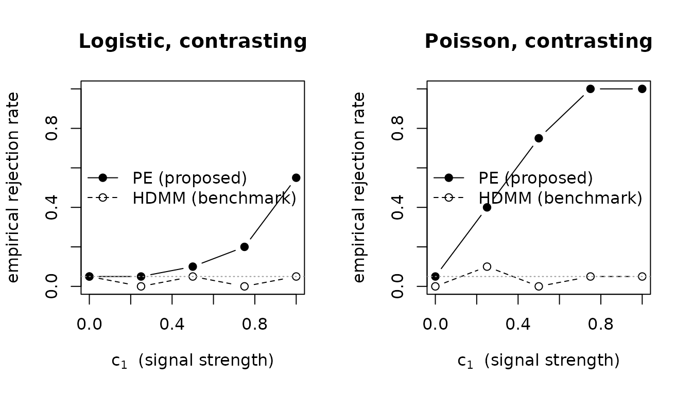

Reproducing the Article's Analyses With POEMED
Source:vignettes/reproducing-the-article.Rmd
reproducing-the-article.RmdThis vignette walks through each analysis in the article “Power Enhancement in High-Dimensional Heterogeneous Mediation Analysis” (in press at the Journal of the American Statistical Association) and reproduces it with POEMED. It follows the article’s own structure: the Monte Carlo simulation study (its Section 4, with the identification study in Section S.4.1 of its supplement) and the empirical data analysis (its Section 5). The companion vignette Power Enhancement for High-Dimensional Mediation: A Guided Tour introduces the method itself; here the focus is faithful replication.
Two things to keep in mind while reading.
Scope of the comparison. The article benchmarks the power-enhanced tests (PE-HDMM for linear outcomes, PE-HDGMM for generalized outcomes) against several competitors: HDMM, HILMA, and GlobalTest. POEMED implements the proposed PE tests and the HDMM benchmark (the total-indirect-effect Wald test that the PE component augments). Every POEMED result therefore reports the central contrast of the article’s figures and tables, PE versus HDMM; HILMA and GlobalTest are separate methods outside this package.
Run size. The article’s simulations use
n = 300,p = 500, and 1,000 replications per design point. Reproducing that here would take far too long for a vignette, so the live code uses smalln,p, andn_rep; the curves have the right shape but are noisier. Each simulation section also shows the exact article settings in aneval = FALSEblock you can run yourself.
set.seed(113)Part I. Monte Carlo Simulation (Article Section 4)
The simulation study asks two questions of every test. Under the
global null of no active mediator (c1 = 0) the rejection
rate estimates the Type I error rate, which should sit
near the nominal level, alpha_level = 0.05. Away from the
null (c1 != 0) the rejection rate estimates
power. pe_power_curve() sweeps
c1 and returns both the benchmark
(rejection_hdmm) and power-enhanced
(rejection_pe) rejection rates at each grid point.
A small helper draws an article-style rejection-rate figure for one design:
plot_rejection <- function(pc, main) {
plot(pc$c1, pc$rejection_pe, type = "b", pch = 19, ylim = c(0, 1),
xlab = expression(c[1] * " (signal strength)"),
ylab = "empirical rejection rate", main = main)
lines(pc$c1, pc$rejection_hdmm, type = "b", pch = 1, lty = 2)
abline(h = 0.05, col = "grey60", lty = 3)
legend("right", c("PE (proposed)", "HDMM (benchmark)"),
pch = c(19, 1), lty = c(1, 2), bty = "n")
}Section 4.1: Linear Mediation Models
The article studies a univariate exposure with n = 300
continuous outcomes and p = 500 candidate mediators whose
noise has an autoregressive 0.5^|i-j| covariance. The
mediator-exposure coefficient is Gamma_x = c1 * tau, where
tau is 0.1, 0.2, 0.3, 0.4, 0.5 for the five mediators with
a nonzero outcome coefficient and an independent N(0, 0.5^2) draw for
each of the others, the direct effect is c2 = 0.5, and two
outcome-mediator patterns are contrasted:
-
Setting (i), homogeneous:
alpha_m = (1, 0.8, 0.6, 0.4, 0.2, 0, ...), so all active mediators push the same way and the total indirect effect isbeta = 0.7 * c1(nonzero). This is the regime where ordinary tests already work; the question is whether PE adds power. -
Setting (ii), contrasting:
alpha_m = (1, -0.5, 0.4, -0.3, 0, ...), four active mediators whose effects cancel so the total indirect effect isbeta = 0for everyc1. This is the regime that defeats a total-indirect-effect test, and where PE is designed to rescue power.
POEMED maps these to pattern = "homogeneous" and
pattern = "contrasting" in
simulate_mediation_data() and
pe_power_curve(). The reduced live run (the article’s
Figure for linear models):
set.seed(113)
lm_homo <- pe_power_curve(n = 150, p = 50, outcome = "continuous",
pattern = "homogeneous",
c1_grid = c(0, 0.25, 0.5, 0.75, 1),
c2 = 0.5, n_rep = 25)
lm_cont <- pe_power_curve(n = 150, p = 50, outcome = "continuous",
pattern = "contrasting",
c1_grid = c(0, 0.25, 0.5, 0.75, 1),
c2 = 0.5, n_rep = 25)
op <- par(mfrow = c(1, 2))
plot_rejection(lm_homo, "(i) homogeneous")
plot_rejection(lm_cont, "(ii) contrasting")
par(op)At this reduced design (n = 150, p = 50, 25
replications, so a Monte Carlo standard error of up to 0.10 per rate)
the curves have the article’s shape, not its values. Under the
homogeneous setting both tests gain power as the signal
grows (at c1 = 1, benchmark 0.84, PE 0.96). Under the
contrasting setting the benchmark rejects in 8 percent
of replications at c1 = 1 and the power-enhanced test in 16
percent. The article’s values at its design (n = 300,
p = 500, 1000 replications; its Figure 1 and the
supplement’s table of designs) are the converged numbers a reported
analysis deserves:
| Setting | c1 |
HDMM | PE-HDMM |
|---|---|---|---|
| homogeneous | 0 | 0.037 | 0.051 |
| homogeneous | 0.5 | 0.690 | 0.940 |
| contrasting | 0 | 0.036 | 0.044 |
| contrasting | 0.5 | 0.087 | 0.331 |
| contrasting | 1 | about 0.15 (read from Figure 1) | about 0.76 (read from Figure 1) |
The default tuning grid, the article’s grid rescaled to the design
(see ?pe_lambda_grid), reproduces these within Monte Carlo
error: 500 replications during the package’s release audit gave 0.048
and 0.062, 0.666 and 0.940, 0.036 and 0.048, and 0.096 and 0.326 for the
first four rows. One feature of the article’s figure is worth noticing:
under the contrasting setting the benchmark’s rate rises above its size
at c1 = 1. The penalized fit sometimes keeps only one
member of a cancelling pair, and the total indirect effect through the
selected mediators is then not zero. That is a property of the grid as
much as of the test.
To reproduce the article’s figure at its actual resolution (including
the negative half of the c1 grid, which the symmetric
design fills in), run:
c1_grid <- seq(-1, 1, by = 0.1)
lm_homo_full <- pe_power_curve(n = 300, p = 500, outcome = "continuous",
pattern = "homogeneous", c1_grid = c1_grid,
c2 = 0.5, n_rep = 1000, cores = 4)
lm_cont_full <- pe_power_curve(n = 300, p = 500, outcome = "continuous",
pattern = "contrasting", c1_grid = c1_grid,
c2 = 0.5, n_rep = 1000, cores = 4)pe_simulation_study() is a convenience wrapper that runs
several patterns at once and stacks the results, which is how the
article’s figure panels are produced:
study <- pe_simulation_study(n = 300, p = 500, outcome = "continuous",
patterns = c("homogeneous", "contrasting"),
c1_grid = seq(-1, 1, by = 0.1), n_rep = 1000)The Real-Data-Motivated Heterogeneous Setting (Supplement)
The supplement adds a third, harder pattern: a setting calibrated to
the DNA-methylation case study of Guo et al. (2022), with eleven
active mediators of mixed sign that neither all agree
(homogeneous) nor exactly cancel (contrasting).
simulate_guo_mediation() generates it from the calibration
constants shipped as [guo_calibration]; the total indirect
effect is guo_calibration$beta_per_c1 * c1, about
-1.597 * c1. (The article reports -1.5977,
computed from the full-precision Guo coefficients; the package ships
those coefficients rounded to the three decimals printed in the
supplement, which give -1.597.)
d <- simulate_guo_mediation(c1 = 1, seed = 113)
dim(d$M) # 85 x 1008, the case-study dimensions
#> [1] 85 1008
d$active_mediators # the 11 active loci
#> [1] 1 2 3 4 5 6 7 8 9 10 11
round(d$beta, 4) # beta_per_c1 * c1, i.e. about -1.597
#> [1] -1.597The fit below uses a wide grid, 50 values from 0.1 to 10, as the
guided tour does for this setting. With it both tests reject at
n = 150, and the power-enhanced screen recovers several of
the mixed-sign loci:
dn <- simulate_guo_mediation(c1 = 1, n = 150, seed = 113)
fit <- pe_mediation(dn$X, dn$Y, dn$M, outcome = "continuous",
lambda_grid = seq(0.1, 10, length.out = 50))
fit[fit$term %in% c("pval_hdmm", "pval_pe", "n_active_mediators"), ]
#> term value
#> pval_hdmm < 0.0001
#> pval_pe < 0.0001
#> n_active_mediators 6
#>
#> Outcome model: continuous (linear)
#> Active mediators identified (6): 1, 4, 5, 6, 9, 10
#> Tuning parameter (HBIC): lambda = 0.1 from 50 values in [0.1, 10] (the grid's lower end)The article’s figure sweeps c1 over
c(0, +/- 0.1, ..., +/- 1) at the case-study size
n = 85, with and without the calibrated confounders,
averaged over 1,000 replications:
rej <- function(c1, confounders) {
ps <- replicate(1000, {
d <- simulate_guo_mediation(c1 = c1, confounders = confounders)
f <- pe_mediation(d$X, d$Y, d$M, Z = d$Z, outcome = "continuous",
lambda_grid = seq(0.1, 10, length.out = 50))
c(f$value[f$term == "pval_hdmm"], f$value[f$term == "pval_pe"])
})
rowMeans(ps <= 0.05)
}
sapply(seq(-1, 1, by = 0.1), rej, confounders = FALSE)Section 4.2: Mediation Models With Generalized Linear Outcomes
The same construction is repeated for non-continuous outcomes through
a link function: a logistic model for binary outcomes
(PE-HDGMM versus HDGMM) and a Poisson model for counts.
Again n = 300, p = 500, with a homogeneous and
a contrasting pattern apiece; the article fixes the direct effect at
c2 = 1 for the logistic models and c2 = 0.4
for the Poisson models.
Here is the dramatic contrasting case for each outcome type (the panel where PE most clearly rescues power), at reduced size:
set.seed(113)
logit_cont <- pe_power_curve(n = 180, p = 50, outcome = "binary",
pattern = "contrasting",
c1_grid = c(0, 0.25, 0.5, 0.75, 1),
c2 = 1, n_rep = 20)
pois_cont <- pe_power_curve(n = 180, p = 50, outcome = "count",
pattern = "contrasting",
c1_grid = c(0, 0.25, 0.5, 0.75, 1),
c2 = 0.4, n_rep = 20)
op <- par(mfrow = c(1, 2))
plot_rejection(logit_cont, "Logistic, contrasting")
plot_rejection(pois_cont, "Poisson, contrasting")
par(op)As in the article, the benchmark HDGMM has little power against
contrasting effects while PE-HDGMM gains substantial power, all while
holding the size at c1 = 0 (20 replications here, so each
rate carries a Monte Carlo standard error of up to 0.11). The article’s
contrasting rows at n = 300, p = 500, and
c1 = 0.5 (logistic) or 0.4 (Poisson) are:
logistic, size 0.035 and 0.044, power 0.065 and 0.243; Poisson, size
0.028 and 0.046, power 0.082 and 0.915 (HDGMM then PE-HDGMM). For binary
and count outcomes the default grid is the review-era grid, under which
the release audit reproduced the Poisson row (0.060 and 0.905) and the
logistic row within Monte Carlo error. The full article designs,
including the homogeneous panels:
c1_grid <- seq(-1, 1, by = 0.1)
# Logistic: c2 = 1
for (pat in c("homogeneous", "contrasting"))
pe_power_curve(n = 300, p = 500, outcome = "binary", pattern = pat,
c1_grid = c1_grid, c2 = 1, n_rep = 1000, cores = 4)
# Poisson: c2 = 0.4
for (pat in c("homogeneous", "contrasting"))
pe_power_curve(n = 300, p = 500, outcome = "count", pattern = pat,
c1_grid = c1_grid, c2 = 0.4, n_rep = 1000, cores = 4)Supplement Section S.4.1: Identifying Individual Mediators (FWER and FDR)
Beyond the global test, the article’s supplement studies how well the
PE machinery identifies which individual mediators are
active, and whether it controls the familywise error rate (FWER) or
false discovery rate (FDR). POEMED exposes this through the
method argument ("Bonferroni" for FWER,
"BH" or "BY" for FDR) and the
report_all_methods switch, which reports all three side by
side as the supplement does.
For a single fit, pe_selection() reports the
active set under each method side by side, together with the
power-enhanced statistic and p-value each one produces (the screened set
feeds J_m, so the methods can give different global
p-values, exactly the PE / PE_BH / PE_BY columns of the article’s
extended tables):
set.seed(113)
d <- simulate_mediation_data(n = 200, p = 60, outcome = "continuous",
pattern = "contrasting", c1 = 1)
d$active_mediators # ground truth
#> [1] 1 2 3 4
fit_all <- pe_mediation(d$X, d$Y, d$M, outcome = "continuous",
report_all_methods = TRUE)
pe_selection(fit_all) # per-method sets + p-values
#> method n_active j_pe stat_pe pval_pe active_mediators
#> Bonferroni 1 174.1 174.2 < 0.0001 2
#> BH 1 174.1 174.2 < 0.0001 2
#> BY 1 174.1 174.2 < 0.0001 2To reproduce the supplement’s identification study (its
empirical FWER, FDR, precision, and recall over many replications),
pe_identification_study() scores each method’s selections
against the truth set across a grid of c1, with the
supplement’s definitions: a mediator counts as truly active when its
outcome coefficient is nonzero, so at c1 = 0 the five such
mediators are the truth set, fwer is the probability of
selecting a mediator outside it, and recall is the share of
the five that were selected (pass truth = "mediation" for
the both-paths definition, under which nothing is active at
c1 = 0 and recall is NA
there):
set.seed(113)
id <- pe_identification_study(n = 150, p = 60, outcome = "continuous",
pattern = "contrasting", c1_grid = c(0, 0.5, 1),
n_rep = 30)
id
#> c1 method fwer fdr precision recall n_valid n_empty
#> 0 Bonferroni 0 0 0 0 30 0
#> 0 BH 0 0 0 0 30 0
#> 0 BY 0 0 0 0 30 0
#> 0.5 Bonferroni 0 0 0.2 0.05 30 0
#> 0.5 BH 0 0 0.2 0.05 30 0
#> 0.5 BY 0 0 0.1667 0.04167 30 0
#> 1 Bonferroni 0 0 0.3333 0.09167 30 0
#> 1 BH 0 0 0.3333 0.1083 30 0
#> 1 BY 0 0 0.3 0.09167 30 0
#>
#> Outcome: continuousAt this small design the Bonferroni screen names no false mediator in
any of the 30 replications at any c1, and at
c1 = 1 its precision is 0.33 with recall 0.09 (30
replications; standard error up to 0.09). The article’s summary,
“close-to-zero empirical FWER and FDR, high precision, but medium-to-low
recall,” describes its own design: at n = 300,
p = 500, and c1 = 0.6 the supplement’s table
prints, for the contrasting setting, FWER 0.000, FDR 0.000, precision
0.403, and recall 0.122, and for the homogeneous setting 0.000, 0.000,
0.984, and 0.497. The default grid reproduces those within Monte Carlo
error (500 replications during the release audit: 0.000, 0.000, 0.406,
0.124 and 0.000, 0.000, 0.972, 0.482). The article-scale study raises
n, p, and n_rep to 300 / 500 /
1000:
pe_identification_study(n = 300, p = 500, outcome = "continuous",
pattern = "contrasting", c1_grid = seq(0, 1, by = 0.1),
n_rep = 1000, cores = 4)Part II. Empirical Data Analysis (Article Section 5)
The article asks whether health-care expenditure mediates the
relationship between economic growth and population health across the
world’s countries. POEMED ships that exact data set,
WHO_health_mediation: a country-by-year panel (2000–2021)
with
-
Exposure
X: annual growth in GDP per capita (World Bank), -
Mediators
M: 57 health-expenditure indicators (WHO Global Health Expenditure Database), -
Outcomes
Y: five health outcomes, infant mortality (imr), under-five mortality (u5mr), life expectancy (leb), low birthweight (lbw), and undernourishment (pou),
with WHO region and World Bank income group available as the grouping and confounding variables.
data(WHO_health_mediation)
dim(WHO_health_mediation)
#> [1] 2002 68
table(WHO_health_mediation$region)
#>
#> AFR AMR EMR EUR SEAR WPR
#> 704 616 176 198 110 198Section 5, Table 1: Infant Mortality (IMR)
WHO_mediation_analysis() reproduces the article’s
per-outcome table: it fits the global model (region, income, and year as
confounders), then a separate model within each WHO region (income and
year as confounders) and each income group (region and year as
confounders), and reports the HDMM and PE p-values for the total
indirect effect together with the active mediators the PE component
identifies.
The function uses the two tuning grids of Yu and Kelley (in press): a
narrower lambda_grid_global = seq(0.1, 5, length.out = 100)
for the global all-country model and a wider
lambda_grid = seq(0.1, 10, length.out = 100) for every
subgroup model. Both grids are the defaults, so no explicit arguments
are needed to reproduce the article exactly.
imr <- WHO_mediation_analysis("imr", groupings = c("global", "region", "income"))
imr[, c("group", "n_countries", "pval_hdmm", "pval_pe", "active_mediators")]
#> group n_countries pval_hdmm pval_pe active_mediators
#> ALL 91 0.0409 < 0.0001 gge_gdp
#> AFR 32 0.4672 0.4672 none
#> AMR 28 0.4129 0.4129 none
#> EMR 8 0.0304 0.0304 none
#> EUR 9 0.0035 < 0.0001 gge_gdp
#> SEAR 5 0.3087 < 0.0001 ext_usd2021_pc
#> WPR 9 0.8721 < 0.0001 chi_che, pvtd_gdp
#> Low 16 0.3157 < 0.0001 pvtd_usd2021
#> Lower-middle 27 0.9546 0.9546 none
#> Upper-middle 26 0.4945 0.4945 none
#> High 22 0.0238 < 0.0001 oops_che, shi_cheRead this against the article’s IMR table. The headline reproductions:
-
Global (ALL): general government expenditure as a
share of GDP (
gge_gdp) is the active mediator; HDMM is borderline (pval_hdmm= 0.041) while PE is essentially zero. -
SEAR (South-East Asia): HDMM sees nothing
(
pval_hdmm= 0.31) yet PE rejects decisively, naming external health expenditure per capita (ext_usd2021_pc). This is a textbook heterogeneous-mediation rescue. -
WPR (Western Pacific): HDMM is near 1
(
pval_hdmm= 0.87) while PE detects compulsory health insurance and private expenditure (chi_che,pvtd_gdp). -
EUR (Europe): both tests reject; PE identifies
general government expenditure as a share of GDP
(
gge_gdp). - AFR, AMR: no active mediation, by either test.
These are precisely the cases the article highlights, where contrasting or heterogeneous mediation hides the signal from the conventional test and the PE component recovers it.
The income-group rows are returned in the same call; the strongest signals appear in the low- and high-income groups, matching the article.
summary() digests the whole table, highlighting the
groups where the power-enhanced test detects mediation the benchmark
misses (the rows the article prints in bold):
summary(imr)
#> POEMED comparison: IMR
#> groups: 11 (11 with data), alpha_level = 0.05
#> detected by benchmark (HDMM): 4 by power-enhanced (PE): 7
#> PE detects mediation in 3 groups the benchmark misses:
#> group n_countries pval_hdmm pval_pe active_mediators
#> SEAR 5 0.309 4.13e-41 ext_usd2021_pc
#> WPR 9 0.872 3.77e-83 chi_che, pvtd_gdp
#> Low 16 0.316 2.10e-62 pvtd_usd2021
#> most-flagged mediators:
#> gge_gdp 2
#> chi_che 1
#> ext_usd2021_pc 1
#> oops_che 1
#> pvtd_gdp 1
#> pvtd_usd2021 1
#> shi_che 1The supplement also gives an extended version of
each table that breaks the power-enhanced result out by multiplicity
method. Pass full_table = TRUE to get that layout, with the
PE p-value and active mediators reported separately under Bonferroni
(FWER), BH, and BY (FDR):
WHO_mediation_analysis("imr", groupings = "global", full_table = TRUE)
#> grouping group n_countries pval_hdmm pval_pe_bonferroni active_bonferroni
#> global ALL 91 0.0409 < 0.0001 gge_gdp
#> pval_pe_bh active_bh pval_pe_by active_by
#> < 0.0001 chi_che, gge_gdp < 0.0001 gge_gdp
#>
#> Outcome: imrThe Other Outcomes, and the Region-by-Income Cells
The remaining article outcomes (under-five mortality, life expectancy, low birthweight, and undernourishment) run identically; only the outcome code changes:
for (y in c("u5mr", "leb", "lbw", "pou"))
print(WHO_mediation_analysis(y, groupings = c("global", "region", "income")))The article also drills into the region-by-income
cells (for example, AFR-Low or WPR-High). Build any one cell with
WHO_mediation_design(), which assembles the exposure,
outcome, mediator, and confounder blocks for a chosen subset, then call
pe_mediation(). A small cell can contain indicators that
never vary inside it; passing drop_constant = TRUE drops
those zero-variance columns with a warning and keeps the reported active
set numbered against the original mediators
(WHO_mediation_analysis() does the same internally):
cell <- WHO_mediation_design("imr", region = "AFR", income = "Upper-middle")
c(n_countries= cell$n_countries, mediators = ncol(cell$M))
#> n_countries mediators
#> 4 57
keep <- apply(cell$M, 2L, sd) > 0
fit <- tryCatch(
pe_mediation(scale(cell$X), cell$Y - mean(cell$Y),
scale(cell$M[, keep, drop = FALSE]),
Z = cell$Z, outcome = "continuous", scale = FALSE,
lambda_grid = seq(0.1, 5, length.out = 100)),
error = function(e) NULL)
if (is.null(fit)) "singular covariance (cell too small)" else
cell$indicators[keep][attr(fit, "active_mediators")]
#> [1] "pvtd_ncu2021_pc"Why a Mediator? Opening Up the Screening Step
For any fit, pe_mediators() shows the evidence the PE
component acted on, the two path statistics, their p-values, the
combined screening p-value, and the active flag for every candidate the
penalized fit selected. This is the per-mediator detail behind the last
column of the article’s tables.
des <- WHO_mediation_design("imr") # global IMR design
gfit <- pe_mediation(scale(des$X), des$Y - mean(des$Y), scale(des$M),
Z = des$Z, outcome = "continuous", scale = FALSE,
lambda_grid = seq(0.1, 5, length.out = 100))
pe_mediators(gfit)
#> mediator name t_outcome t_exposure screen_p selected
#> 2 che_pc_usd 8.234 -1.686 0.0918 FALSE
#> 4 gghed 2.874 0.6476 0.5172 FALSE
#> 9 pvtd_che 1.188 0.537 0.5913 FALSE
#> 10 oops_che 2.003 0.9471 0.3436 FALSE
#> 14 gghed_gge -0.7627 1.231 0.4457 FALSE
#> 16 pvtd_pc_usd 2.302 -0.8475 0.3967 FALSE
#> 17 oop_pc_usd -8.491 -1.315 0.1886 FALSE
#> 19 cfa_che -2.944 0.6753 0.4995 FALSE
#> 21 chi_che -5.535 3.111 0.0019 FALSE
#> 25 vhi_che -2.673 -2.494 0.0126 FALSE
#> 26 gge_gdp -4.26 -3.732 0.0002 TRUE
#> 31 ext_usd 2.809 3.451 0.0050 FALSE
#> 35 ext_ncu_pc -4.063 -1.373 0.1697 FALSE
#> 38 pvtd_ppp_pc -0.2667 -0.2293 0.8187 FALSE
#> 39 ext_ppp_pc -1.438 2.224 0.1505 FALSE
#> 41 ext_gdp -3.921 0.325 0.7452 FALSE
#> 45 ext_ncu2021 -5.506 1.731 0.0834 FALSE
#> 47 gghed_usd2021 -4.697 0.3339 0.7384 FALSE
#> 50 che_ncu2021_pc -0.7842 0.18 0.8571 FALSE
#> 52 pvtd_ncu2021_pc 0.2591 0.1229 0.9022 FALSE
#> 53 ext_ncu2021_pc 6.643 -1.532 0.1255 FALSE
#> 57 ext_usd2021_pc 7.506 1.361 0.1735 FALSEReproducibility Notes
- The global, regional, and income analyses above are deterministic.
WHO_mediation_analysis()uses a tuning grid whose defaults are set to belambda_grid_global = seq(0.1, 5, length.out = 100)for the all-country model. Calling the function with no explicit grid arguments reproduces the active mediators and p-values shown here, which the package’s test suite checks as a fixed benchmark. - The Monte Carlo sections are stochastic. The reduced runs reproduce
the shape of the article’s curves; the
eval = FALSEblocks give the exactn = 300,p = 500, 1,000-replication settings. Setcoresabove 1 to parallelize andseedfor exact reproducibility. - Exact real-data p-values depend on the preprocessing the article
fixes (standardizing the exposure and mediators, centering the outcome,
leaving the confounder indicators unscaled, and using treatment
contrasts with alphabetical reference levels for the region and income
factors);
WHO_mediation_analysis()applies all of this for you. See the guided-tour vignette for doing it by hand.
Reference
Yu, X., and Kelley, K. (in press). Power Enhancement in High-Dimensional Heterogeneous Mediation Analysis. Journal of the American Statistical Association.
Session Information
sessionInfo()
#> R version 4.6.1 (2026-06-24)
#> Platform: x86_64-pc-linux-gnu
#> Running under: Ubuntu 24.04.5 LTS
#>
#> Matrix products: default
#> BLAS: /usr/lib/x86_64-linux-gnu/openblas-pthread/libblas.so.3
#> LAPACK: /usr/lib/x86_64-linux-gnu/openblas-pthread/libopenblasp-r0.3.26.so; LAPACK version 3.12.0
#>
#> locale:
#> [1] LC_CTYPE=C.UTF-8 LC_NUMERIC=C LC_TIME=C.UTF-8
#> [4] LC_COLLATE=C.UTF-8 LC_MONETARY=C.UTF-8 LC_MESSAGES=C.UTF-8
#> [7] LC_PAPER=C.UTF-8 LC_NAME=C LC_ADDRESS=C
#> [10] LC_TELEPHONE=C LC_MEASUREMENT=C.UTF-8 LC_IDENTIFICATION=C
#>
#> time zone: UTC
#> tzcode source: system (glibc)
#>
#> attached base packages:
#> [1] stats graphics grDevices utils datasets methods base
#>
#> other attached packages:
#> [1] POEMED_1.0.0
#>
#> loaded via a namespace (and not attached):
#> [1] cli_3.6.6 knitr_1.52 rlang_1.3.0 xfun_0.61
#> [5] otel_0.2.0 generics_0.1.4 textshaping_1.0.5 jsonlite_2.0.0
#> [9] htmltools_0.5.9 ragg_1.5.2 sass_0.4.10 glmnet_5.1
#> [13] rmarkdown_2.32 grid_4.6.1 evaluate_1.0.5 jquerylib_0.1.4
#> [17] fastmap_1.2.0 foreach_1.5.2 yaml_2.3.12 lifecycle_1.0.5
#> [21] compiler_4.6.1 codetools_0.2-20 fs_2.1.0 Rcpp_1.1.2
#> [25] lattice_0.22-9 systemfonts_1.3.2 digest_0.6.39 R6_2.6.1
#> [29] ncvreg_3.16.0 splines_4.6.1 shape_1.4.6.1 bslib_0.12.0
#> [33] Matrix_1.7-5 withr_3.0.3 tools_4.6.1 iterators_1.0.14
#> [37] survival_3.8-6 pkgdown_2.2.1 cachem_1.1.0 desc_1.4.3